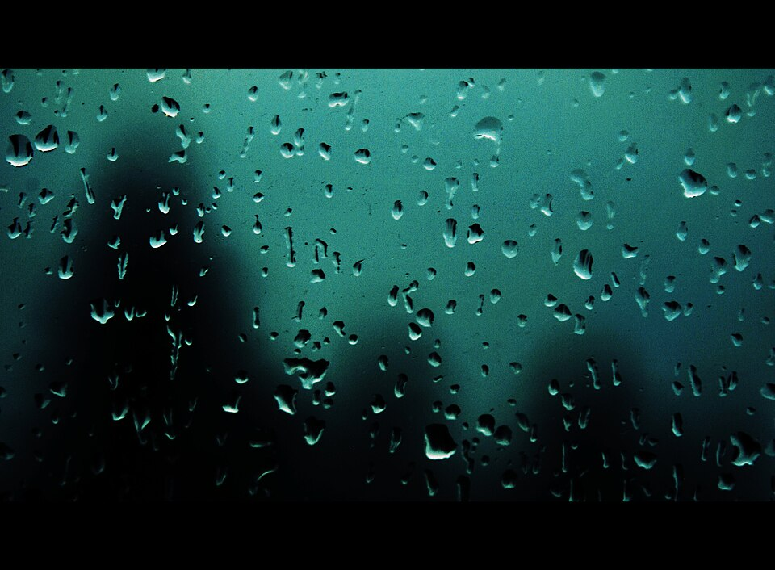
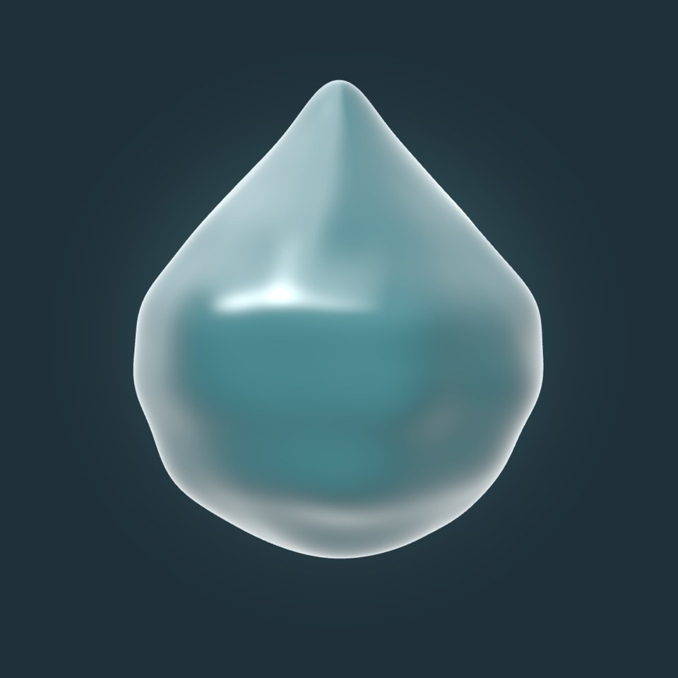

Rain
Drops on glass and a tin roof, with thunder far off. Small, close sounds that cover office talk without drawing your ear.
- Drops on glass
- Tin roof
- Distant thunder
4Leafs mixes rain, forest and deep space live in your browser and moves one layer each minute, so nothing loops. Free, or Pro for $6 a month.

Drops on glass and a tin roof, with thunder far off. Small, close sounds that cover office talk without drawing your ear.
Wind through tall pines, a stream close by and a bird now and then. Wide and slow, good for writing and planning.
Warm drones at 55 Hz with harmonics drifting above them. No edges in the sound, made for long reading sessions.

Pick Rain, Forest or Deep Space and press play. 4Leafs builds each one from three layers in your browser and moves one of them each minute, so an hour never repeats.
See how a session runsA steady downpour on glass and a tin roof, with thunder far off. It covers office talk without drawing your ear.
Rain, Forest or Deep Space. Turn any of its layers off if one bothers you.
The sound fades in over 30 seconds and out over the last minute.
One layer gets louder or softer, so your ear never locks onto a loop.
Written to show how 4Leafs is meant to be used. These quotes are not from real customers yet.
“I used to switch playlists every twenty minutes. With Forest on, I wrote for two hours straight.”
“Deep Space covers our open-plan office without lyrics pulling me out of a spreadsheet.”
“Rain at low volume, 50 minutes on, five off. That routine got my thesis written.”
For trying 4Leafs at your desk.
For people who work to sound every day.
For teams that want 4Leafs on every desk.